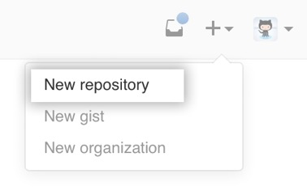

Guide to GitHub (for Mac Users)
Git is a revision control system used to manage source history, and GitHub is a hosting service for Git repositories.
Below is a guide for Mac users to Git and GitHub, and has been adapted from the content found on GitHub Help, the Help section of the GitHub website.
Please note the following:
In this guide, the instruction "Runsample_command" refers to pasting sample_commandinto your Terminal and pressing the enter key, so as to run that command.
The term local repository refers to the copy of your project that is stored on your computer, and the term remote repository refers to the copy on the GitHub website.
To clone a remote repository is to create a local copy in which you can make your changes. If you are granted access by the author, you can push changes of your own to the remote repository as well.
Creating a New Git Repository
Click here to create a brand new repository on GitHub that you can then clone onto your computer, or click here to create a Git repository from an existing project on your computer.
For instructions on cloning another user's repository, click here.
Create a new Git repository on GitHub
- Sign into https://github.com/
- Click on the plus sign in the top right corner and click on New Repository.

- Enter a short name for the new repository. You can optionally add a short description as well.
- Choose between a public and private repository (if you have set up a free account, click on Public).
- If you would like to create a README, check the box that says Initialize this repository with a README.
- Select Create Repository.
You will be directed to the page https://github.com/your_username/your_repo_name.
- Next, clone the repository onto your computer. (Click here for instructions and start at step 2.)
- To verify the remote URL, click here.
Congratulations! You have created a new repository. Add new files to the new folder on your computer. To add and commit files, click here. To add collaborators, click here.
Add an existing project to GitHub
- In the Terminal,
cdinto the directory that contains your project. For example, if your project directorymy-project is on your Desktop, runcd ~/Desktop/my-project
- Run
git init
This creates a Git repository namedmy-projectfrom the local directory.
- Create a new repository in GitHub (click here for instructions), ideally with the same name as the project directory.
- At the top of your GitHub repository’s Quick Setup page, click on the clipboard icon to copy the remote repository URL.

- In your Terminal, run
git remote add origin your_repository_url
This sets the remote, i.e. the URL to which your local repository will be pushed.
- To verify the remote URL, click here.
- Next, add and commit files. (Click here for instructions.)
- Run
git push -u origin master
This pushes the changes in your local repository to the remote repository on GitHub.
Verify the remote URL
- To verify the new remote URL, run
git remote -v
You should see the following:
origin your_repository_url (fetch)
origin your_repository_url (push)
That is, if user xyz123 has created a repository hello-world, the output would look like this:
origin https://github.com/xyz123/hello-world.git (fetch)
origin https://github.com/xyz123/hello-world.git (push)
Add collaborators
- Click on the repository in GitHub. You should now be at the following url:
https://github.com/your_username/your_repo_name
- Click on the Settings link on the right half of the page.
This will take you to a new page.
- Next, click on the Collaborators tab in the sidebar on the left, and start typing the collaborator’s username.

- Select the collaborator’s username from the dropdown menu, and click on Add collaborator.
- The user will receive an email invitation to your repository. Once the user clicks on the Verify your email address link in this email invitation and verifies their email address, they will get collaborator access.
For your collaborators, the next step is to clone your remote repository on their respective computers. Click here for instructions on cloning either your own or another person's repository onto your computer.
Clone the repository locally
- Go to https://github.com/author-username/project-name, substituting "author-username" with the username of the project's author, and "project-name" with the repository's name.
- In the Terminal,
cdinto the directory inside which you would like to clone the repository. For example, to clone the repository on your Desktop, entercd ~/Desktop
- Under the repository name, click Clone or Download.

- Under Clone with HTTPS, click the clipboard icon to copy the URL for the repository.

- Run
git clone your_repository_url
This will create a copy of the project on your computer.
Configure your username and email address
- If at any point you get the message "Please tell me who you are", enter the following:
git config --global user.name "your user name"
git config --global user.email "your email address"
Contributing to the Repository
Create a new branch to make changes in
- In the Terminal,
cd into your local repository.
- Run
git branch
You will see * master in the output, because you are in the master branch.
- The next step is to create a new branch so you can make changes without altering the original version in the master branch.
Rungit branch your-branch-name
This creates a new branch with the name your-branch-name.
- Run
git checkout your-branch-name
This switches you to the new branch, and you can start making changes.
Make changes and commit them
- Work on your code and save your changes.
- In the Terminal,
cdinto the repository.
- Run
git status
You will see a list of files that have been modified.
- For each of the files whose changes you would like to track, run
git add file_name
Alternately, to add all files that appear in the output of Step 3, you can run git add . (with the period)
- Run
git commit -a -m "Your commit message"
This will commit your changes within your branch.
- Click here to push your local changes to your branch in the remote repository.
Push your changes to your branch in the remote repository
- Run
git push -u origin your-branch-name
Now, your collaborators can view the work you have done in your branch by opening the remote repository on GitHub.
- Click on the Branch tab on the left side of the page to access the version of the code stored in a particular branch.

- Once you have made more changes that you would like to commit to your branch in the remote repository, go back to this section and repeat.
- Once you are ready to get feedback from your collaborators, click here to create a pull request.
Make a pull request
- From the GitHub website, submit a pull request for
your_branch_name
Collaborators can now make comments on your code.
- Make further changes as needed.
- Repeat this procedure to commit your changes.
- Repeat this procedure to push them to the remote branch.
- Once the code has been accepted, click here to merge your changes into your local and remote master branch.
Update your local master branch to reflect changes made by collaborators
- In the Terminal,
cd into your project folder.
- Run
git checkout master
This switches you to the master branch if you are not in it already.
- Run
git fetch origin
- Run
git merge --ff-only origin/master
The next step is to rebase and merge your changes.
Rebase and merge your changes
- Run
git rebase -i master
- In the text editor, squash commits so there is only one commit left.
That is, leave the first commit aspick and the remaining commits assquash.
- Run
git checkout master
- Run
git merge --ff-only your-branch-name
The next step is to push the local master branch to the remote repository.
Push your changes to the master branch in the remote repository
- Run
git push -u origin master
Now, your work is reflected in the master branch of the remote repository on GitHub.
- Click on the Branch tab on the left side of the page (see step 2 of this section), and select master to access the version of the code stored in the master branch.
- To make (and ultimately commit and push) more changes in your local repository, go back to this section and repeat.